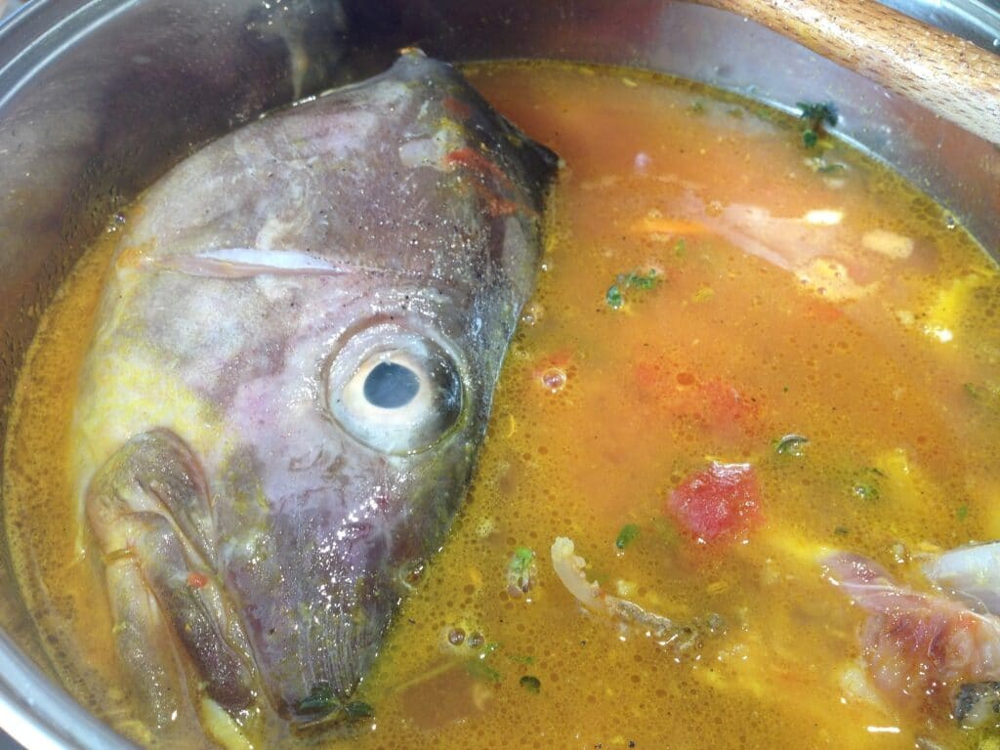

Stinky Spicy Fish Soup Recipe!
Doesn't it look yummy!

Ingredients needed:
- cooking spray
- 0.5 medium onion, chopped
- 1 clove garlic, minced
- 1 tablespoon chili powder
- 1.5 cups chicken broth
- 1 (4 ounce) can canned green chile peppers, chopped
- 1 teaspoon ground cumin
- 1.5 cups canned peeled and diced tomatoes
- 0.5 cup chopped green bell pepper
- 0.5 cup medium shrimp, peeled and deveined
- 0.5 pound cod fillets, cut into chunks
- 0.75 cup plain nonfat yogurt
Recipe
- Gather all ingredients.
- Spray a large saucepan with cooking spray and heat over medium-high heat. Add onion and saute, stirring often, until translucent, about 5 minutes. Add garlic and chili powder; saute until fragrant, about 2 minutes.
- Stir in chicken broth, chile peppers, and cumin; bring to a boil. Reduce the heat to low, cover, and simmer for 20 minutes.
- Add tomatoes, bell pepper, shrimp, and cod; increase the heat to medium and return to a boil. Reduce the heat to low, cover, and simmer for 5 more minutes.